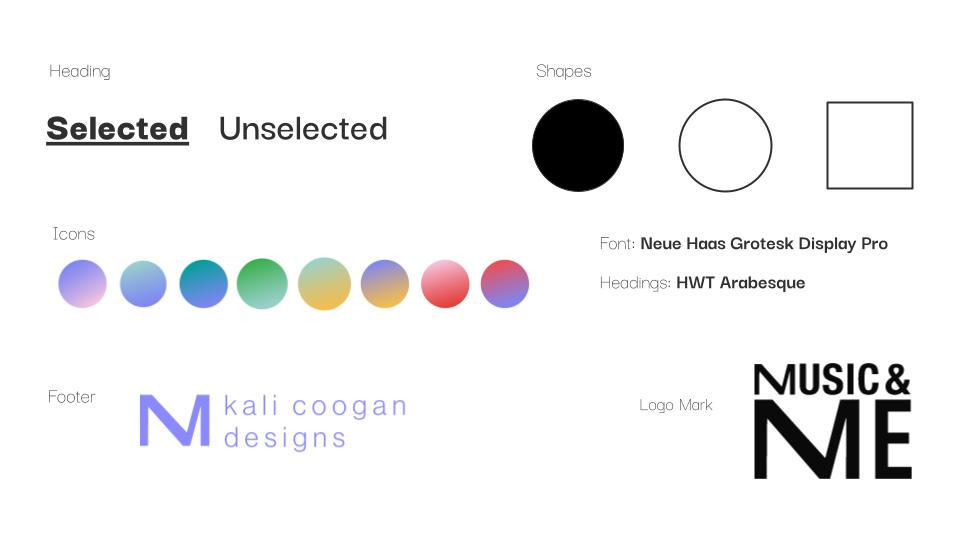

Music and Me
Overview
I was asked to create an interactive kiosk telling a story about music and what it means to me. The goal of this project was to make an interesting and accessible design that visually demonstrates the data that we collected.
The Data
Before starting any designs, I had to define what music meant to me and figure out what story I wanted to tell. Since I'm a musician, I was curious about general musical statistics like, what are the most common keys found in pop music? So for those pages, I pulled data from other articles and created visual diagrams for them. For the rest of the pages, I wanted the information to be more personal, so I used data from my own experiences. The project consisted of a title page, table of contents, summary, nine different graphs, and a contact page.

A challenge for this project was creating interesting diagrams while keeping in mind how a person would intereact with the kiosk. I found that even though the kiosk dimensions were 4096 x 2160, an average person could only comfortably interact with a certain portion of the screen. We were also asked to create an accessibility feature for the essay page, so figuring out how a wheelchair user would navigate that screen was a fun extra challenge.
The Design
Music is colorful and abstract, so I wanted my designs to reflect that. I used plenty of colorful gradients for icons and in the background. However I wanted the information to be readable, so I used a straightforward sans serif font for most of the text.
Some diagrams called for designs that were more straightforward, like the United States Map. Although it may not be innovative, this was the simplest and quickest way to show the information to the user. Some other diagrams needed more creative solutions. The Popular Lyrics graph, for example, uses a speech bubble to express the most common lyrics found in each music genre. There were multiple ways I could have presented this information, but I thought this solution was fun and easyily gets the point across.
A challenge for me in this project was to tell a story about music while presenting my musical data in an interesting way. How could I artistically present data? I have never tried that before until this project. My goal with this project was to share some interesting facts about music and what it means to me ina fun and colorful way. I hope that users find the information fascinating and are inspired to interact with the designs.